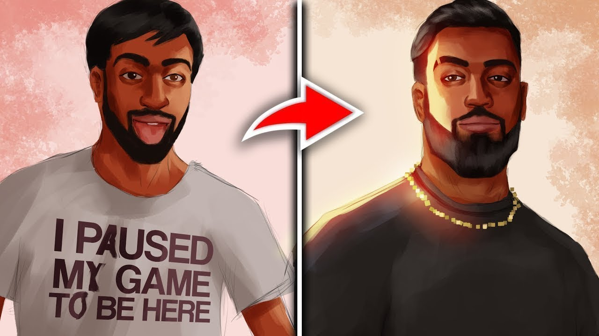
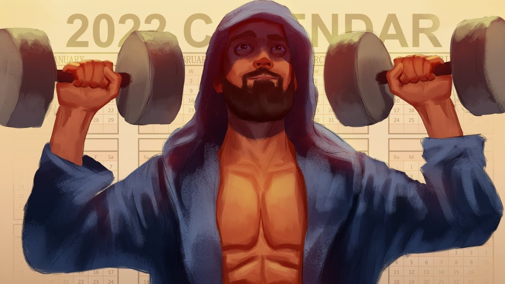
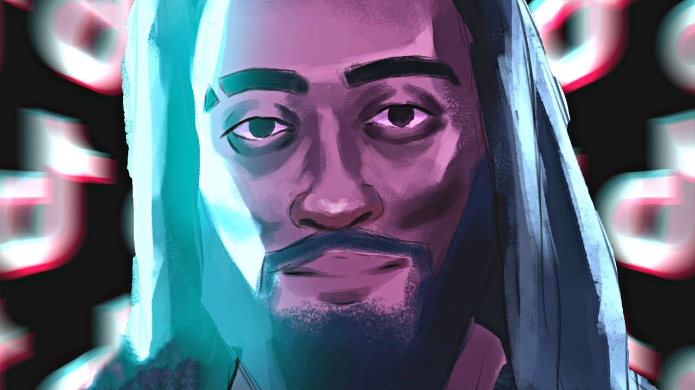
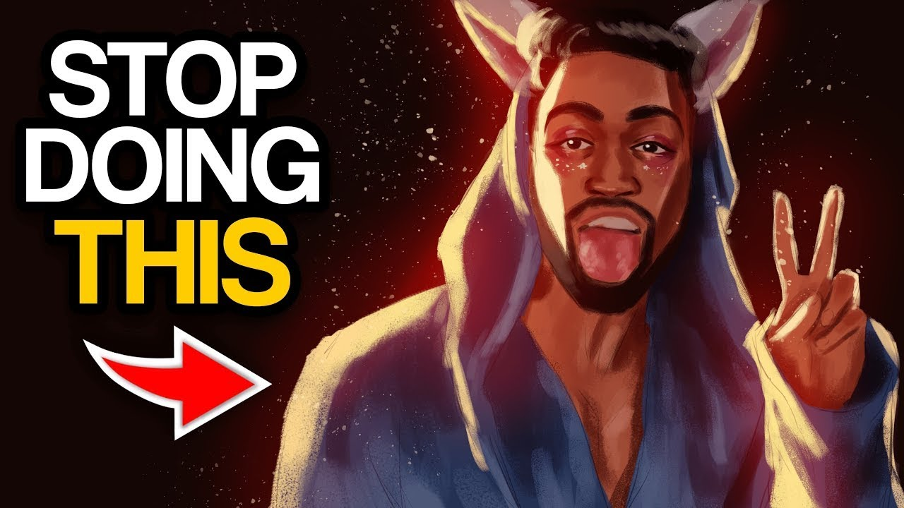
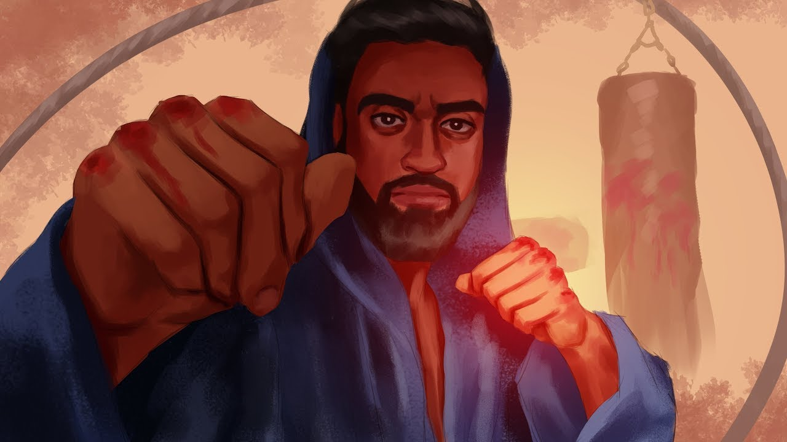

In a world increasingly influenced by social media, the figures we choose to follow shape our beliefs, habits, and identities. For young men navigating the complexities of modern masculinity, finding role models who embody positive traits can be transformative. Influencers like Sneako and Hamza have gained attention for their unconventional yet impactful perspectives on masculinity, self-improvement, and societal expectations. By promoting values such as discipline, self-awareness, and purpose, these figures serve as valuable guides for those seeking to develop into strong, grounded men.
The concept of masculinity has undergone significant changes in recent years. While some advocate for dismantling traditional notions of manhood, others emphasize the need for young men to reclaim attributes such as strength, responsibility, and leadership in healthy ways. Sneako and Hamza are among those who champion the latter perspective, offering an alternative to the shallow, consumer-driven ideals perpetuated by mainstream culture.
Their content stands out because it encourages men to focus on personal growth rather than external validation. This includes fostering mental and physical resilience, cultivating emotional intelligence, and striving for meaningful goals.
Sneako has carved a niche as a thought-provoking creator who challenges conventional narratives. His content often revolves around critical thinking, self-awareness, and questioning societal norms. Sneako’s approach resonates with young men who feel disillusioned by mainstream media and are searching for alternative viewpoints.
Through his videos and discussions, Sneako encourages men to think independently and take ownership of their lives. He emphasizes the importance of breaking free from passive consumption, whether it’s social media, entertainment, or unhealthy habits. By inspiring followers to live intentionally and pursue excellence, Sneako offers a blueprint for young men striving to unlock their full potential.
Hamza has emerged as a leading voice in the self-improvement space, specifically addressing young men who struggle with direction and self-discipline. His content often explores themes like building healthy habits, achieving financial independence, and developing confidence.
What sets Hamza apart is his relatable approach. He openly shares his own struggles and setbacks, creating an authentic connection with his audience. By advocating for habits like regular exercise, mindfulness, and lifelong learning, Hamza provides a practical framework for young men to grow into their best selves.
Hamza also critiques the “dopamine-driven” lifestyle that many young men fall into, characterized by overindulgence in video games, junk food, and casual relationships. Instead, he urges his followers to embrace delayed gratification, pursue meaningful goals, and cultivate discipline—traits that are essential for long-term success.
The figures we look up to profoundly impact our mindset and actions. Following positive masculine role models like Sneako and Hamza can provide young men with the tools to navigate life’s challenges more effectively. These influencers offer a counterbalance to toxic messages that often dominate social media, such as materialism, instant gratification, and superficial relationships.
Sneako and Hamza also promote the idea that masculinity is not about dominating others or suppressing emotions, but about building strength, responsibility, and authenticity. They encourage men to be vulnerable when necessary while remaining steadfast in their principles.
In a world saturated with conflicting messages about masculinity, Sneako and Hamza stand out as positive role models for young men. Their focus on self-awareness, discipline, and purpose offers a healthier and more empowering vision of what it means to be a man in today’s society. By following their guidance, young men can cultivate the traits needed to lead meaningful, impactful lives and become role models for others in turn. Choosing the right influences isn’t just about entertainment—it’s about shaping the future of one’s character and legacy.